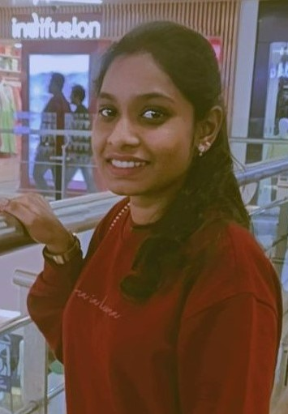

|  |
Leena Roshini is currently pursuing a degree on Computer Applications at KG College of Arts and Science, Saravanampatti. She use her time management skills by concentrating on academic and hobbies by spending her free time on reading books and writing poems. The interesting fact is that through this she got some soft skills like Communication and Time management. She has knowledge on HTML, CSS, Java, C, C++. |
|---|